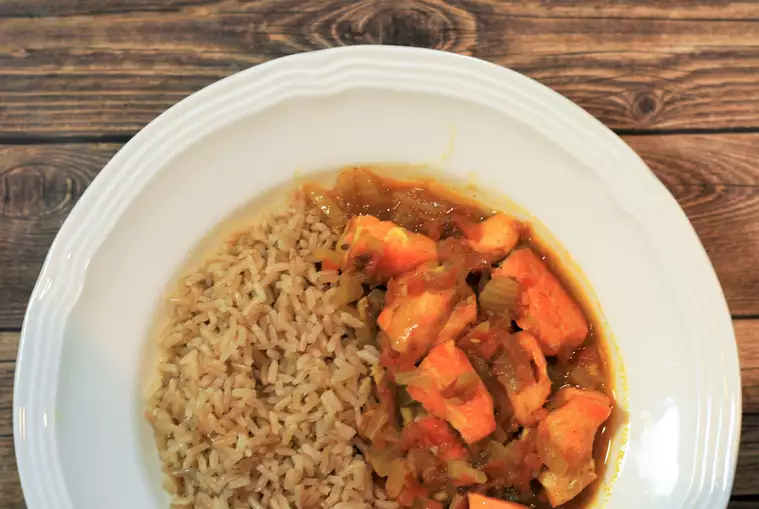

←Back
Salmon Curry

Description
A family favorite for salmon lovers! Serve hot with rice or roti, topped with cilantro if you like.
Ingredients
- 3 (6 ounce) fillets salmon, cut into cubes
- 3 tablespoons olive oil, divided
- 2 medium onions, sliced
- 4 cloves garlic, minced
- 1 tablespoon minced fresh ginger root
- 2 teaspoons cumin seeds
- 2 teaspoons garam masala
- 1 teaspoon ground turmeric
- 2 tomatoes, grated
- 2 cups water
- salt to taste
Steps
- Heat 2 tablespoons oil in a frying pan over medium-high heat. Gently fry salmon pieces until easily flaked with a fork, about 5 minutes. Drain on paper towels and set aside.
- Heat remaining oil in the same pan over medium heat. Add onions, garlic, and ginger; fry until golden, about 7 minutes. Add cumin, garam masala, and turmeric. Cook and stir until fragrant, about 10 seconds. Add tomatoes; cook until they start to reduce, about 5 minutes. Add water and salt; bring to a boil.
- Return salmon to the pan and reduce heat to low. Simmer until flavors combine, about 10 minutes.